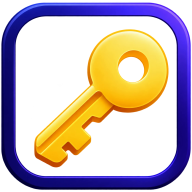

はじめて使うときは、Google の画面が出ます。いつものアカウント（スマホのかぎばこと同じもの）を選んで「続行」を押してください。
ブラウザに「パスワードを保存しますか？」と聞かれたら、「使用しない」を押してください。保存すると、Google アカウントだけで金庫が開けるようになってしまいます。
かぎばこは、ID とパスワードをマスターパスワードで暗号化して、あなたの Google ドライブにしまっておく道具です。 Android アプリと、このパソコン用のページの両方から、同じファイルを読み書きします。 暗号化と復号はすべてこの端末の中で行い、マスターパスワードやパスワードが、作者を含むほかの誰かに送られることはありません。 このページは、金庫の中身をパソコンに残しません（タブを閉じると、開いた中身は消えます）。
プライバシーポリシー ・ 利用規約 ・ 動作テスト ・ 連絡先（GitHub）